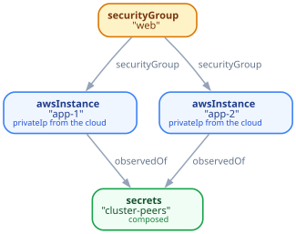

One apply, not two: a secret composed from a generated password and an endpoint the cloud has not assigned yet.
fleet connected where resource scaleway secrets "db-password" as pw { valueFrom := fromEnv "DB_PASSWORD" } resource scaleway postgres "main" as db { masterUsername := "dbadmin", maxCapacity := 4 } resource scaleway secrets "db-url" { valueFrom := composed expr!"postgres://{secretValueOf pw}@{endpointOf db}/main" }

fleet webTier in warsaw where …
Tactic `decide` proved that the proposition
Assert (Locality.warsaw.covers keys)
is false AWS has no region in Warsaw, so this fleet cannot be placed there.